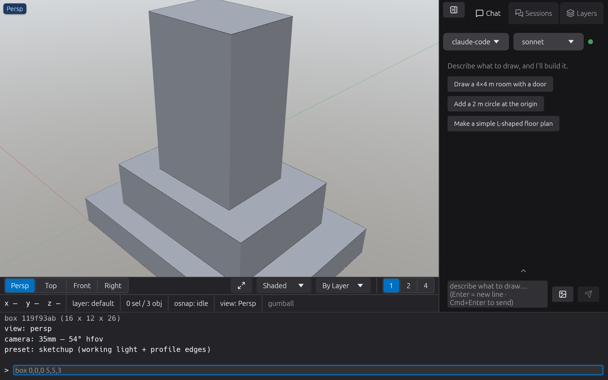
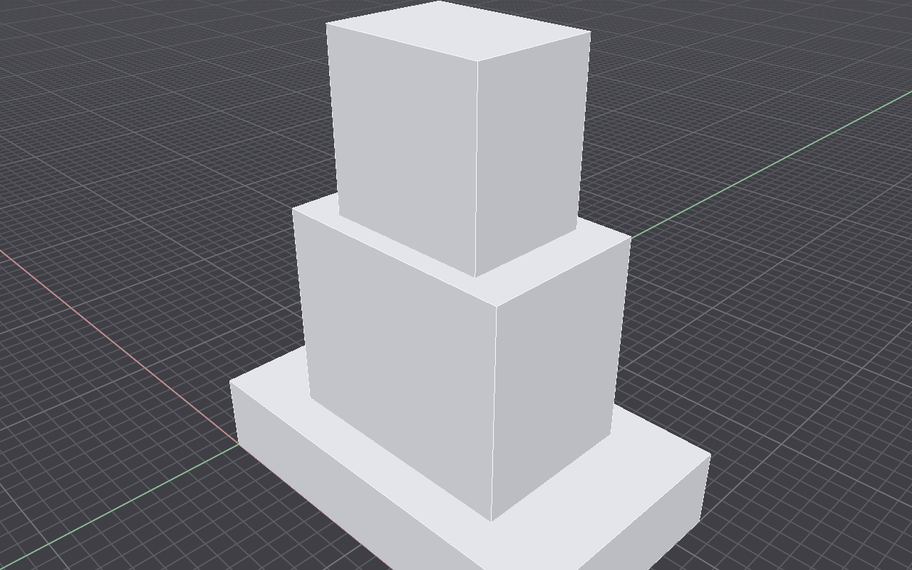
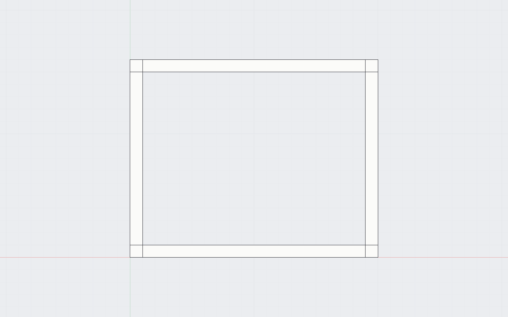
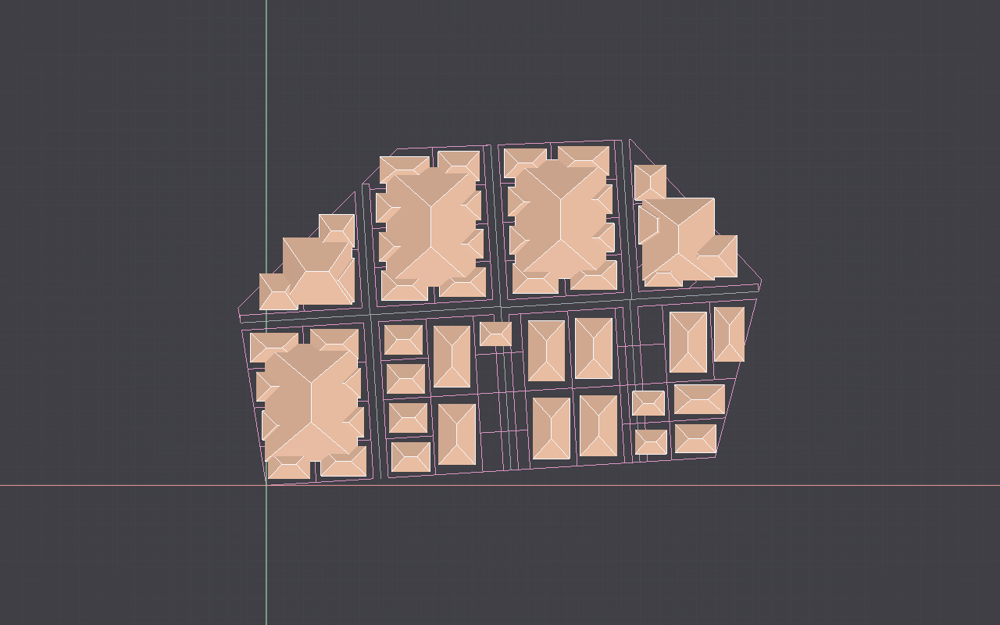
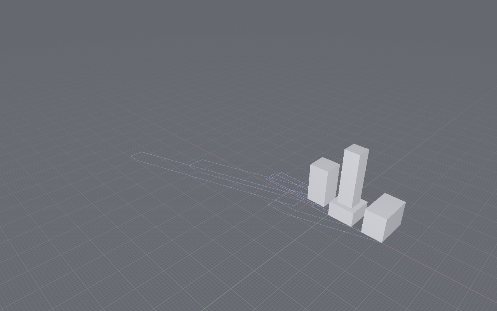
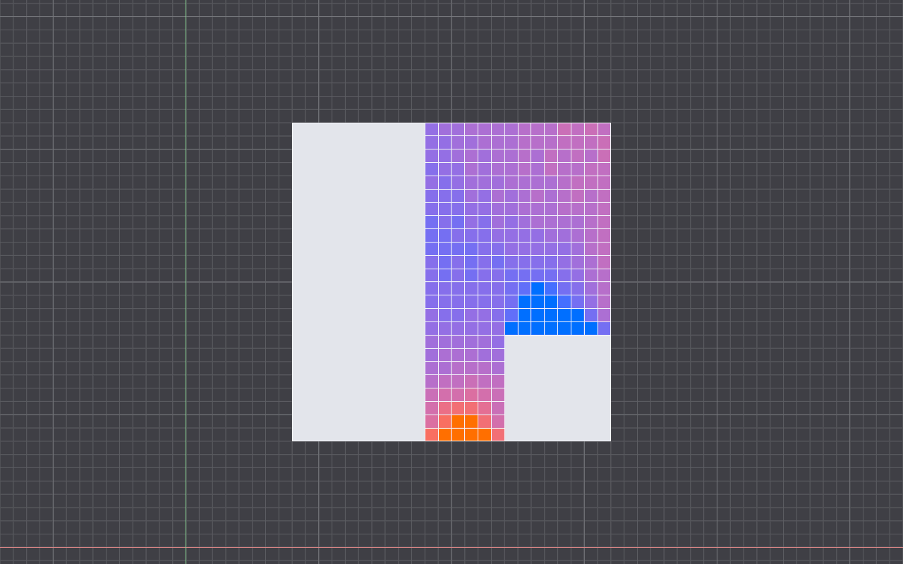
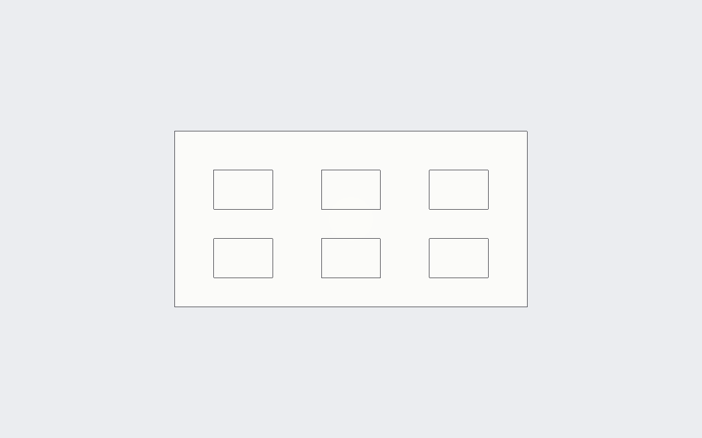
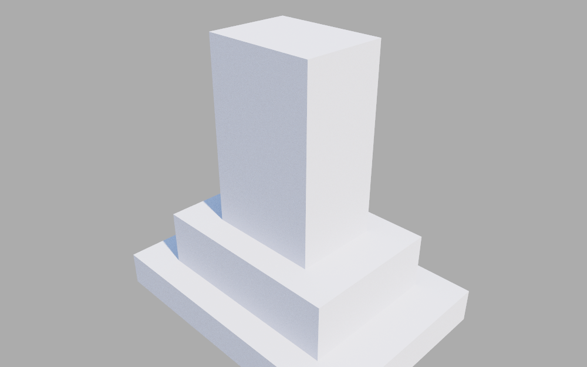

ItsJustCAD — Beta User Review v0.5.2
Work through the checklist, then Export results and send the JSON to the developer.

How to run these tests
- Launch ItsJustCAD. Start each group from a fresh document (⌘N / Ctrl+N) unless a step says to build on the previous one.
- Commands are typed in the command line (bottom, full-width) or the deck Chat — both accept the same verbs. Selectors:
last= most recent object,sel= current selection,name:foo= by name. - For each item, verify the expected result, then tick the box. Leave a box unchecked if it failed and write what happened in that section's Notes field.
- Your ticks + notes are saved in this browser automatically. When done, jump to Export results, download the JSON, and send it back.
Honest limits read first
Known, deliberate limits in v0.5.2. None of these block testing — they explain results you might otherwise flag as bugs:
- intemfit euro_latam profile is placeholder. Any run that resolves a rule from the
euro_latamregion prints "using euro_latam defaults (placeholder — confirm with Manuel)". That banner is expected, not an error. - Compliance is name-match + straight-line. Guard/handrail/ceiling checks match by object name (no geometric modeling); travel distance is straight-line room-centroid → nearest exit, not a routed egress path. Advisory pre-check only — verify with a licensed professional / AHJ.
- Straight-skeleton (Felkel) is convex-exact only.
skeleton=felkelfalls back to the offset-approximation on non-convex blocks (never a broken skeleton). The robustskeleton=offsetis the default. - DWG import is only as good as the installed LibreDWG. 0.13.3 is too old for modern AutoCAD-2013+ files — those fail loudly (truncation detected), never a silent empty import. 0.14+ or an ODA converter is needed for them.
- The ray tracer needs no setup (it renders the real model in-app), but the AI diffusion render ships with no backend active — you configure one (e.g. ComfyUI) first. The local, offline diffusion path needs the user-installed
sd(stable-diffusion.cpp) binary plus a model download — not one-click yet. - App is unsigned. Expect a one-time "unidentified developer" warning on first launch; chat encryption is default OFF for the same reason.
1 · Drawing & Modeling
2D drafting, NURBS curves, solids, booleans, constraints, hatches, blocks.


2 · Expressive Structures geodesic / form-finding working
Weird-structures pack: geodesic domes, space frames, shells, and physics-based form-finding (dynamic relaxation). These now build correctly.

3 · intemfit — Site Planning & Lot Subdivision Phases 1–12 shipped
Parametric site planning (roads → blocks → lots → setbacks → open space → buildings → yield), CityEngine/TestFit-style. Results bake onto the roads, blocks, lots, setbacks, openspace, buildings layers. All geometry verbs are undoable and replay byte-identical for a fixed seed.

lotgeneratesite)lotsubdivide)4 · Environmental Analysis & Camera
Sun / shadow / radiation studies, camera projections (incl. phone-lens sims), render modes.


5 · Compliance (advisory pre-check only)
6 · Landscape & Planting
Import a terrain first: terrain /path/survey.csv (or .geojson).
7 · DWG / DXF Import assisted bridge
Assisted import *.dwg via a user-installed converter (LibreDWG — detect, don't bundle). Plus truncation detection, an import-warning popup, and a scoped deck workdir.
brew install libredwg. 0.14+ is required for modern (AutoCAD-2013+) files; 0.13.3 fails loudly (truncation detected) rather than importing an empty model.8 · Deck & Chat (LLM)
Terse mode (default), clarify-before-act, plan-execute, markdown rendering, critique/report hooks.
9 · Language & Legacy Skins all Romance languages
Every Romance language ships in-app — en / es / pt / fr / it / ro / ca / gl — plus onboarding-driven legacy skins (AutoCAD / Rhino / Revit palettes, fonts, aliases). Reachable via onboarding, a verb, and the Theme menu. Non-English catalogs are seed translations; native-review feedback is very welcome here.
10 · Sheets & PDF
Paper sheets, scaled ortho views, plan/section/elevation, vector PDF export.

11 · Interop & Export
12 · Render — Ray Tracer & AI Diffusion no diffusion backend by default
The ray tracer renders the real model and needs no setup. The AI diffusion render reimagines the view and ships with NO backend active — you configure one (remote or local) first.

13 · UI, Menus & Gumball
Right-dock tabs, native menus, window controls, autosuggest, gumball hotkey.
Export results & send them back
When you're done, add any overall notes below, then Download JSON and email it to htarrido@pm.me (or attach it to a GitHub issue). The JSON records every test id, whether it passed, and your notes.